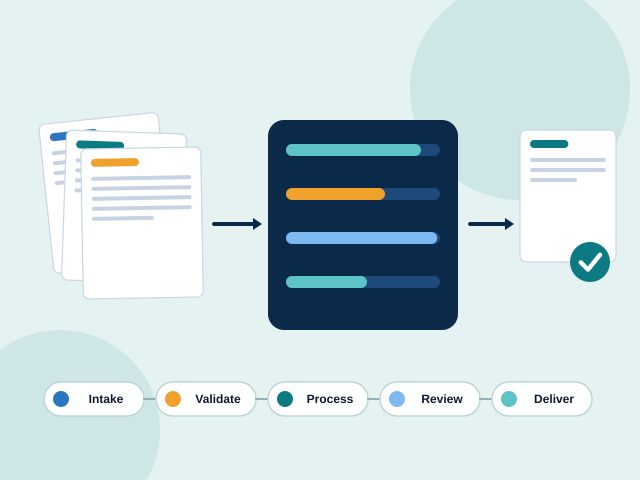
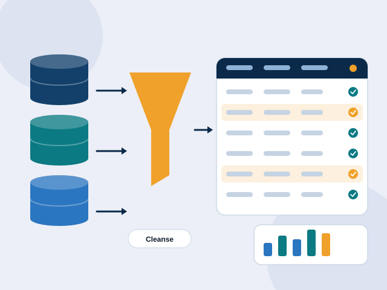
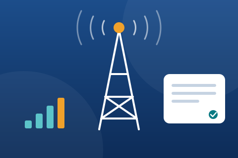
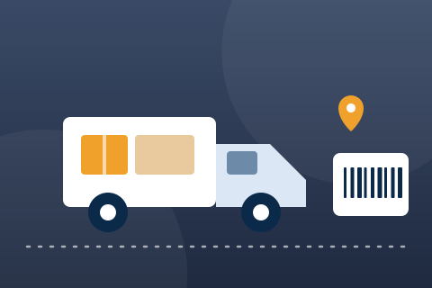
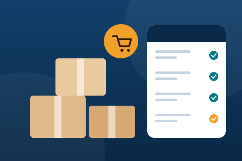

Customer Support
Multichannel voice, chat and email support delivered by trained teams under service-level agreements you define.
- Inbound and outbound voice
- Email and chat support
- Tier 1–2 technical helpdesk
- Escalation and complaint handling
Business Process Outsourcing
Alturis runs customer support, back-office processing and data management for growing and enterprise businesses — with the people, process discipline and performance monitoring to keep every service level on track, 24 hours a day.
Sample figures for demonstration purposes. Replace with your own verified metrics.
Trusted by operations teams at (fictional clients)
Service capabilities
Every programme is built on a documented service design, trained teams and measurable service levels — whichever line you start with.
Multichannel voice, chat and email support delivered by trained teams under service-level agreements you define.

Order, claims and document operations run as governed, measurable workflows with clear queues, controls and audit trails.

Accurate, validated and well-structured data — from keying and digitisation through cleansing, reconciliation and reporting.
Industries we serve
Regulation, seasonality and customer expectations differ by sector. Choose an industry to see the challenges we solve and the processes we run.
Patient support, claims and records operations run with privacy-first controls.
Onboarding, account servicing and reconciliation operations with audit-ready records.
Customer care, loyalty, order management and returns for stores and online retailers — including catalogue and marketplace data support.

Tier-1 helpdesk, billing queries and provisioning data management for telecom providers.
Booking changes, itinerary support and loyalty servicing around the clock.

Shipment tracking, proof-of-delivery processing and freight billing support.
Claims intake, policy servicing and document processing that keep claimants informed.
Tier 1–2 product support, onboarding operations and licence and order administration.
Client onboarding, document management and billing operations for advisory and legal firms.
Why choose us
We are accountable for outcomes: service levels, accuracy and customer experience — visible to you every day.
Add or release capacity in weeks, not quarters, as volumes rise and fall.
Structured onboarding, nesting and continuous coaching for every role.
Independent sampling and calibrated scorecards across every service line.
Root-cause reviews and Lean projects reduce effort and errors each quarter.
Access controls, secured production areas and audit-ready records.
Per agent, hour, transaction or process — chosen to fit your demand.
Follow-the-sun coverage across six delivery centres and multiple time zones.
Daily dashboards and weekly reviews keep every commitment visible.
How we work
A proven five-stage model reduces transition risk and gets performance stable quickly.
We map your current processes, volumes, systems and service levels, and agree what success looks like.
Weeks 1–2
We design the service model: team structure, workflows, tools, security controls and reporting.
Weeks 2–4
Recruitment, training and a parallel run move the work across with minimal disruption to your customers.
Weeks 4–10
Dedicated teams deliver against agreed SLAs with daily reporting and named escalation owners.
Ongoing
Root-cause reviews, quality calibration and improvement projects raise performance every quarter.
Quarterly
Case studies
Three illustrative programmes. Demo Case Studies
Healthcare

Demo Case StudyE-commerce
Financial Services
Careers
More than 3,000 people work across our six delivery centres. We invest in them because great service starts with great people.
Roles from entry-level associates to senior leaders across six countries.
Paid training, certification support and a personal learning budget.
Clear career paths — many team leaders started on the phones.
Work with clients and colleagues on four continents.
Supportive team leaders, peer coaching and regular recognition.
Tell us what you run today and where it hurts. We’ll show you how a partnership could improve service levels, control cost and free your team to focus on the business.